◆ MISSÃO CONCLUÍDA ◆
HiperFoco
Solução para ajudar estudantes com TDAH a organizar seus estudos, um case de UX/UI Design do começo ao fim: pesquisa, personas, estratégia, design system e protótipo de alta fidelidade.
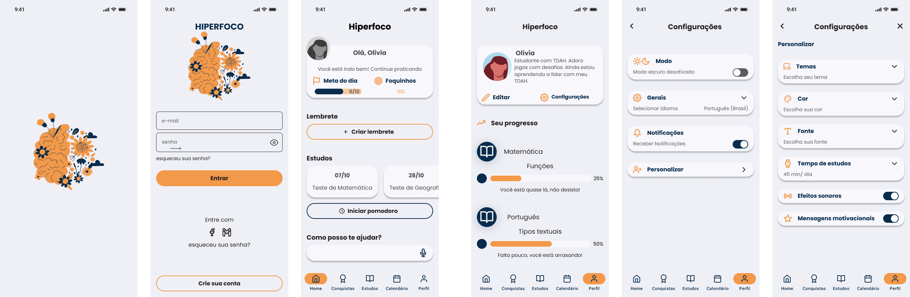
O Problema
Estudantes do ensino fundamental, médio e superior com TDAH enfrentam dificuldades de aprendizagem devido às metodologias tradicionais de ensino, que predominam na maioria das escolas. Esses métodos, em geral, não promovem o engajamento necessário para apoiar suas necessidades.
Isso causa problemas para:
Estudantes, pais, professores e a escola.
Por que isso acontece:
Estudantes desmotivados têm maior probabilidade de reprovação e dificuldade em acompanhar o ritmo escolar.
Por que isso é importante:
Podemos oferecer uma solução que estimule o engajamento dos estudantes, promovendo o desenvolvimento escolar e fortalecendo suas habilidades principais.
Pesquisa com os Usuários
Os dados coletados revelaram padrões de comportamento, motivações e dificuldades que afetam diretamente o desempenho acadêmico desses estudantes. Essas informações foram fundamentais para entendermos como criar uma solução mais eficaz e personalizada para apoiar o aprendizado e engajamento dos jovens com TDAH.
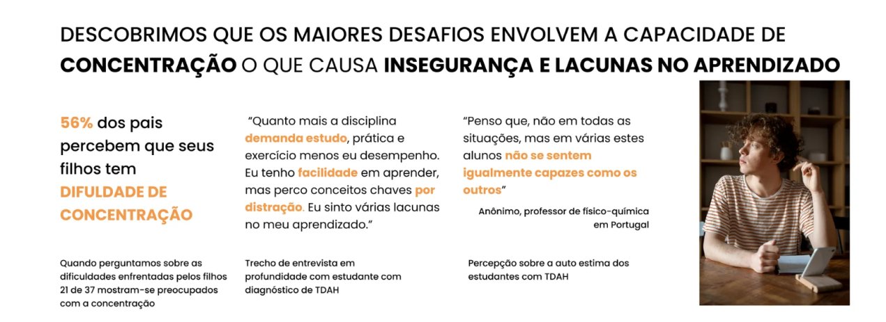
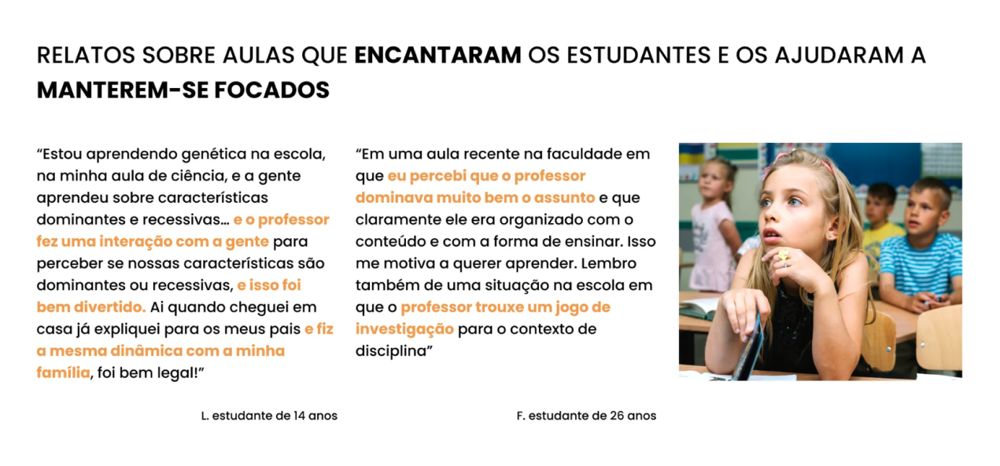
Personas
Tendo como base os principais achados da pesquisa, desenvolvemos personas representativas dos nossos usuários-alvo (professor e aluno com TDAH), o que nos ajudou a criar uma solução personalizada e empática.
Além das personas, também mapeamos a jornada destes usuários, destacando os principais pontos de interação, desafios e oportunidades. Isso nos permitiu visualizar como otimizar a experiência dos jovens com TDAH, promover um maior engajamento e melhores resultados acadêmicos.
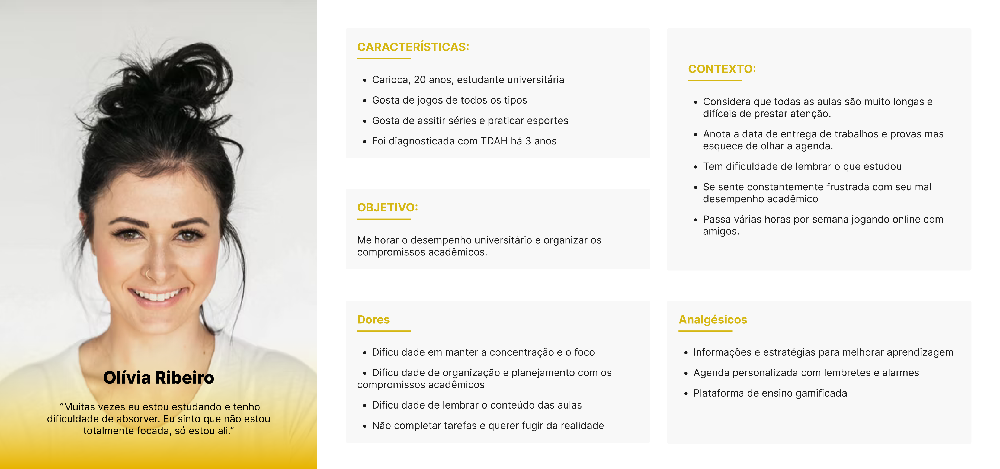
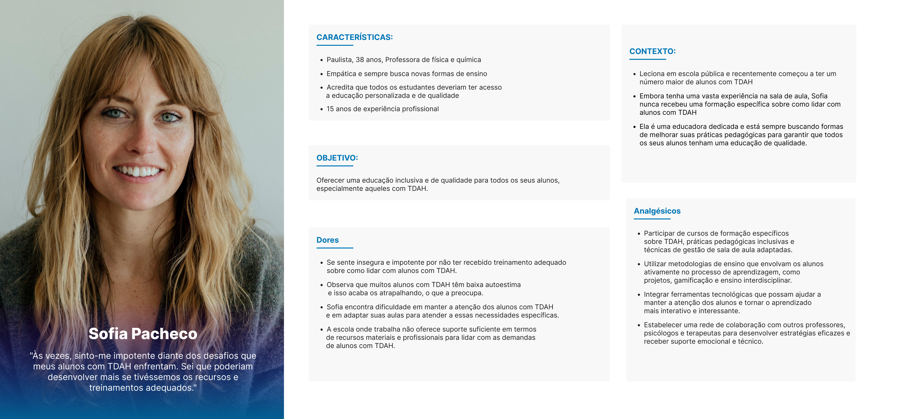
Estratégia de Negócio
A partir das ideias de solução priorizadas, utilizamos os frameworks Value Proposition Canvas e Business Model Canvas para considerar as necessidades dos estudantes com TDAH e identificar oportunidades de mercado. Além disso, realizamos um benchmarking competitivo para entender o mercado e identificar lacunas e diferenciais que poderíamos oferecer.
Dado que a pesquisa mostrou que os participantes utilizam mais o celular, decidimos iniciar com um aplicativo mobile.
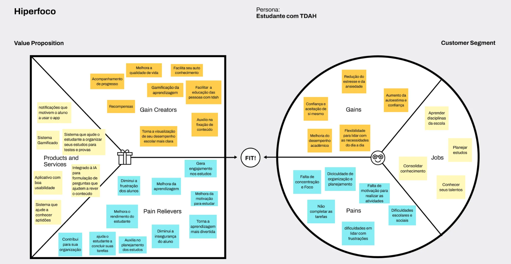
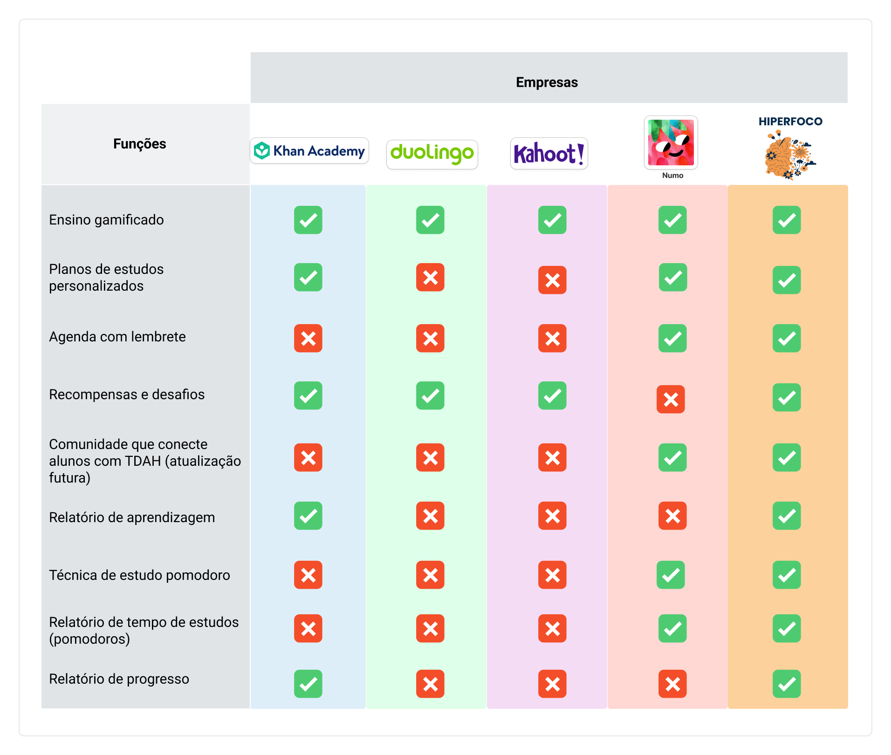
Design System
No desenvolvimento do design system para o aplicativo, escolhemos duas cores principais que refletem os valores e a experiência que queremos proporcionar: laranja como cor primária e azul escuro como cor secundária.
A combinação de laranja e azul escuro cria um contraste eficaz, que ao mesmo tempo é estimulante e tranquilizante. Essa harmonia é fundamental para um público que precisa de estímulo visual sem perder o foco. O laranja atrai atenção para as áreas interativas, enquanto o azul escuro oferece uma base estável e confiável, proporcionando uma interface que é envolvente, funcional e confortável para o usuário.
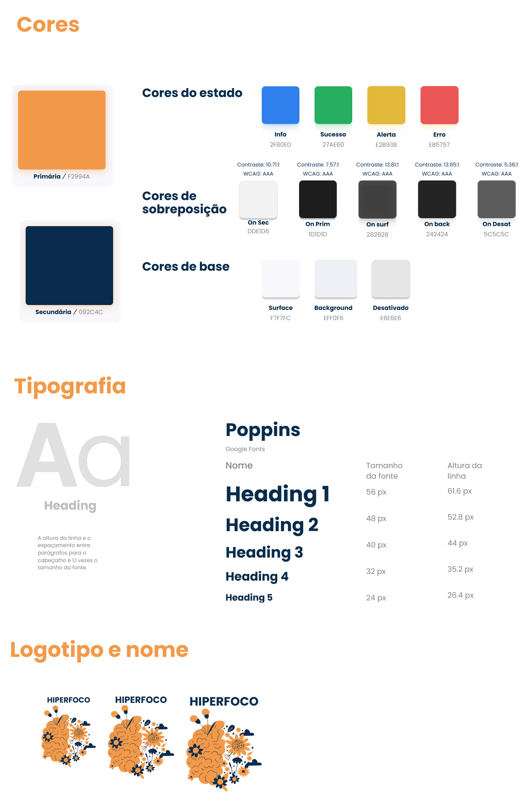
Wireframes
Começamos com ideias no papel em forma de rabiscos e evoluímos para protótipos digitais utilizando o Figma, o que transformou nossos rabiscos em algo mais estruturado e detalhado. Com o wireframe aprimoramos o fluxo e a organização das telas do aplicativo e conseguimos visualizar a experiência de forma integrada, o que facilitou a criação de um percurso claro e intuitivo para o usuário acessar cada funcionalidade. Além disso, essa fase nos permitiu posicionar estrategicamente as informações nas telas, garantindo uma navegação fluida e eficiente.
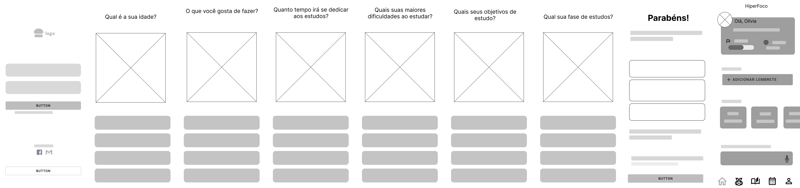
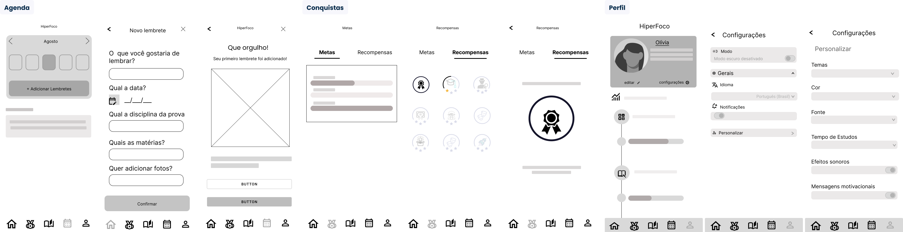
Teste de Usabilidade
Após esboçarmos nossa solução decidimos aplicar o teste de usabilidade para validar com o nosso público alvo a estrutura do fluxo de nossa aplicação, formulários e navegação. Para isso decidimos aplicar um teste moderado, onde acompanhamos via Google Meet. Para nós é extremamente importante que o usuário tenha uma navegação intuitiva e rápida, pois queremos facilitar seu dia a dia de estudante e tornar o armazenamento de lembretes uma tarefa natural.
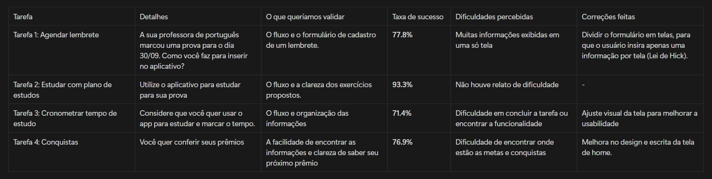
Protótipo de Alta Fidelidade
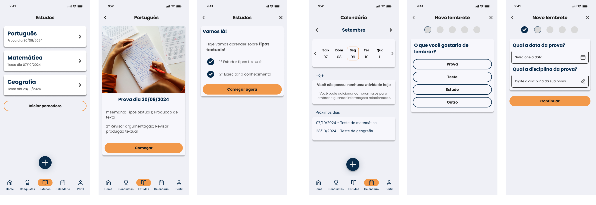
Conclusão
Com a finalização deste projeto, podemos dizer que conseguimos compreender as principais necessidades dos nossos usuários. Os insights coletados mostraram que o aplicativo atende às necessidades básicas do público-alvo, mas há áreas claras para melhorias, tanto em usabilidade quanto em funcionalidades adicionais, que podem ampliar ainda mais o valor do produto. Como Scott Belsky disse, "um projeto nunca está terminado, apenas em seu lançamento mais recente". Esta conclusão marca o início de uma fase contínua de evolução e refinamento.
O sucesso do aplicativo está diretamente ligado ao processo contínuo de aprendizado e adaptação. Continuaremos a ouvir os usuários, e as melhorias baseadas em suas necessidades e feedbacks são essenciais para garantir uma experiência mais satisfatória e eficiente. Assim, garantimos não apenas o uso contínuo da plataforma, mas também sua relevância no apoio ao aprendizado e ao engajamento dos estudantes com TDAH.
Nossa Equipe: Gabrielle Rosa, Angelica Curtis, Aryela Costa, Fernando Correr e Ana Carolina